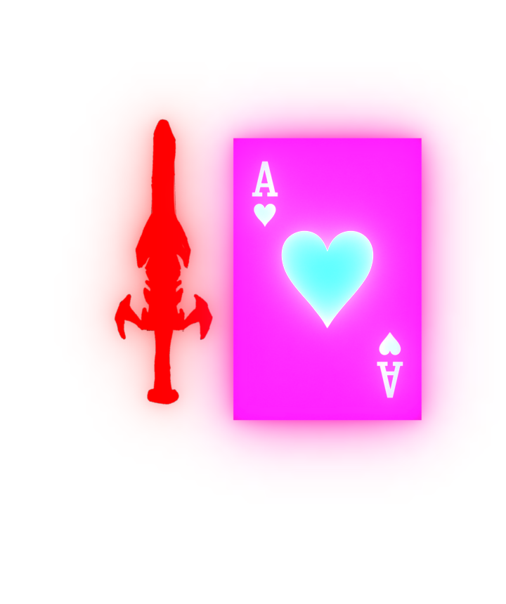

PHASE! is a multiplayer and user-interactive fighting game that resolves around you — killing or sparing other maniacs. Besides the base game, players can create their own content, ranging from fanmade boss-fights to textures to even songs or effects! This content, if approved by the creator, can be used for others to create their own boss-fights and levels.
As I mentioned, PHASE! is gonna be user interactive with a simplistic UGC System revolving around A website that will be built specifically for sharing UGC. After visting the site, you will simply login and download the user generated content. If you're worried about malware, don't worry, so were we! For that reason, we will work on having a good manual moderation.
After downloading the level, you will simply import it in-game in the pause menu. Then, all your imported goodies will be visible and accessible in a dashboard. Again, if the creator of the UGC approves so, you can use that creation on the Level Editor (that is too, on the pause menu in-game.)
PHASE! is stated to release around 2028, though it's not exactly determined yet. It's still in very early development. Stay tuned for a free demo that's currently being worked on, and planned to release later this year on itch.io!
 PHASE! discord server